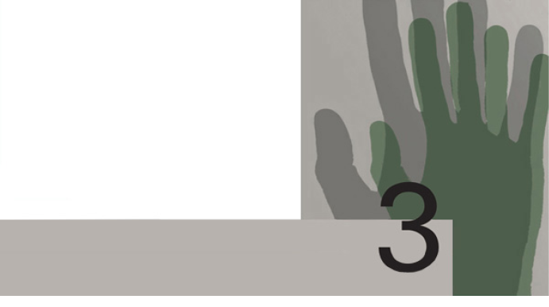
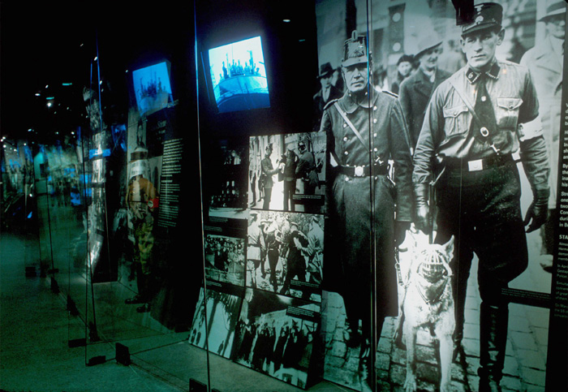

שואה וג'נוסייד
עד כה דנו בהגדרות שונות אפשריות של המונח ג'נוסייד ובמצבים שונים שבהם הוא עלול להתרחש. בהקשר הישראלי עולה מאליה השאלה אם השואה נכללת, מבחינת הגדרתה, בקטגוריה של מקרי ג'נוסייד. ננסה עתה לעמוד על הקשר בין שני המונחים — קשר המעורר, כצפוי, וכפי שנראה בהמשך, מחלוקות רבות בין החוקרים השונים העוסקים בחקר השואה לחוקרים העוסקים בחקר הג'נוסייד, ובין אלה העוסקים בכל אחד מהנושאים לבין עצמם.
על הגדרת השואה
בעשורים האחרונים ייחדה העברית לגורלם של היהודים בשלטון הנאצי את המונח "שואה". פירושה המקורי של המילה לפי מילון אבן שושן הוא: חורבן, הרס, כִיליון, אסון קשה. המילה מופיעה כמה פעמים בתנ"ך, בין השאר בישעיהו, י: ד: "ומה תעשו ליום פקודה ולשואה ממרחק תבוא", ובמשלי, ג: כה: "והמה לשואה יבקשו נפשי". בספרות הנבואה — ישעיהו, צפניה ויחזקאל — מבטאת המילה "שואה" סכנה מצד עמים שכנים או נבואות זעם על גורלם של הללו. בספרים אחרים (כגון איוב, ל: יד; משלי, א: כג; תהלים, לה: ח) מבטאת המילה מצוקה קשה, כאב מר, ייסורים עזים, בקשר לגורלו של היחיד.1
ככל הידוע לנו, המונח שואה בהקשר של גורל היהודים בשלטון הנאצי הופיע בראשונה בשנת 0491 (ת"ש) עוד לפני שהחל הרצח השיטתי של היהודים. בשנה ההיא התפרסמה בירושלים חוברת בהוצאת הוועד המאוחד לעזרת יהודי פולין שכותרתה שואת יהודי פולין. ואולם עד אביב 2491 היה השימוש במונח נדיר מאוד. דומה שהמונח "חורבן", בעל הקונוטציה היהודית וההיסטורית והנפוץ בשימוש ביידיש ("דער חורבן"), הוא שנעשה בו שימוש ספונטני וראשוני, בדומה למונח קטסטרופה שבו השתמשו גם בלועזית. רק כאשר החלו מנהיגים בתנועת העבודה הציונית וסופרים והוגים בארץ ישראל להתבטא בשאלת השמדת יהדות אירופה רווח יותר המונח העברי "שואה", אך השימוש בו עדיין היה מוגבל. בעצם, המונח כפי שהוא היום השתרש רק לאחר התמוטטות גרמניה הנאצית ובחוק זיכרון השואה והגבורה — יד ושם, תשי"ג-3591 הוא כבר הופיע כמונח רשמי.
עם זה, לא כל החוגים בעם היהודי וגם לא כל הלא יהודים קיבלו את המונח. כך, לדוגמה, בדיון שנערך בביטאון אגודת ישראל בארצות הברית, Jewish Observer, בשנת 7591, התייחס אחד מראשי הציבור האגודאי שם לשאלה אם המונח שואה קביל לתיאור השמדת יהדות אירופה בימי מלחמת העולם השנייה. בין השאר הוא כתב:
האם המונח שואה קביל? בפירוש לא. המילה שואה בעברית, כמו המילה Holocaust באנגלית, מניחה כי הייתה קטסטרופה מבודדת, שלא היה לה קשר לדבר כלשהו לפניה או אחריה, כגון רעידת אדמה או גל של גיאות. כפי שראינו, גישה זו רחוקה מהשקפת התורה על ההיסטוריה היהודית. חורבן [זו המילה המתאימה בעיניו למאורע] יהדות אירופה הוא חלק אינטגרלי מתולדותינו, ואסור לנו לבודדו וליטול ממנו את המשמעות המונומנטלית שיש לו בעבורנו.
בהמשך הסתייג הכותב מטעותם של מייסדי "יד ושם" שהרגישו צורך למצוא מונח חדש להשמדת יהדות אירופה. באופן אירוני, המונח המלאכותי שהם יצרו רוקן את המושג חורבן ממשמעותו ומסמליותו העמוקות.
חוגים דתיים ביקשו אפוא להבליט את השואה כפרק בשרשרת אירועים טרגיים קשים בתולדות העם היהודי לדורותיו ולצמצם בכך את משמעותה היהודית הייחודית. אחרים טענו שיש להשתמש במונח "ג'נוסייד" שהוטבע, כזכור, בעקבות השואה, ולדבר על "הג'נוסייד היהודי" או "רצח העם היהודי".
היום קשה להשתמש במובן המקורי של המילה "שואה", שכן משמעותה הוגבלה לחלוטין, או כמעט לחלוטין, למעשי הנאצים. עם זה, יש להדגיש, אפשר לגלות לפעמים שימושים לא ראויים במונח "שואה", המוליכים לעתים לזילות בו גם בישראל וגם בעולם. יש המשתמשים בו גם לציון אסונות ומקרי ג'נוסייד שקרו לעמים אחרים, כמו לדוגמה, "שואת הצוענים" וגם "שואת הארמנים" — אף שרצח עם זה התרחש לפני השואה כמשמעותה המקובלת. שימוש נרחב למדי במילה — העלול לגרום לבנליזציה שלה — נעשה בתיאור פעולות של אפליה נגד השחורים בארצות הברית, נגד יהודים בברית המועצות לשעבר ובחבר המדינות, נגד ערבים בשטחים הכבושים בידי ישראל ונגד קורבנותיהם של מעשי אי־צדק אחרים, אמיתיים או מדומים, המתרחשים ברחבי העולם.
נשאלת השאלה, האם כשאנו עוסקים בשואה עלינו לכנות כך גם את מה שעלה בגורלן של קבוצות הקורבנות הלא־יהודים של המשטר הנאצי שנרצחו בתקופת השואה: צוענים, הומוסקסואלים, אסירים פוליטיים, שבויי מלחמה רוסים, חולי נפש, פולנים ו"עדי יהוה"?
בקשר לשאלה זו נזכיר את הסוגיה שנדונה בכינוס מדעי שהתקיים בשנת 7891 במוזיאון השואה בוושינגטון: מי היו קורבנותיה של השואה? האם אפשר להבחין בין "הפתרון הסופי" של הבעיה היהודית לבין המדיניות הנאצית כלפי קבוצות אתניות ודתיות וקבוצות אוכלוסין מוגדרות אחרות? אם כן, מה הן ההבחנות?2
בלועזית נתקבלו מונחים אחרים. המונח הרווח ביותר הוא Holocaust, שמקורו במילה היוונית Holokustoma, שהוראתה המקורית היא קורבן הנשרף כולו באש, "קורבן עולה", ואשר שימש לתרגום ללטינית של הכתוב "עולה כליל לה'" (שמואל א, ז: ט), וגם לתרגום המילה "עולה" במקומות נוספים. השימוש במונח באנגלית במאה ה־61 וה־71 הרחיב את מובנו המילולי, והוא החל להופיע בדרך של השאלה לציון קורבן בכלל. אחר כך נעשה בו שימוש, בדרך כלל, בהקשר של הרס מוחלט של חפץ או מקום או קבוצה, לרוב באש, אך גם בדרכים אחרות, בייחוד טבעיות. השימוש האחרון הזה במילה היה עוד לפני התרחשות ה־Holocaust במאה ה־02, במובנה האחרון, לציון השמדת העם היהודי בידי הנאצים. מונח זה התקבל רק כמה שנים לאחר סיום מלחמת העולם השנייה, בין 7591 ל־9591. לאחר הפצת סרטו של קלוד לנצמן Shoah החל שימוש נרחב בשפות שונות במונח "שואה", כפי שהוא בעברית, להשמדת יהודי אירופה.
ואולם יש המבקרים את השימוש במונח שואה או Holocaust. לטענתם, למונח, בייחוד בלועזית, יש, כאמור, הקשר דתי — קורבן עולה הנשרף כולו באש. הם מבקרים את ההקשר הזה ושואלים: הוקרב למען מה? הוקרב למען מי? הם מבקשים להדגיש את העובדה, שהשואה אינה מעשה שמים, מעשה אלוהים או כוח עליון, אלא מעשה ידי
אדם — וזה גם אחד ההיבטים הקשים ביותר של מאורע היסטורי זה. ייתכן שהקונוטציות הדתיות של המונח Holocaust ממזערות את העובדה הנוראה ומצמצמות את משמעותה ההומניסטית: ההכרה כי השואה וכל מעשי הג'נוסייד האחרים נעשו בידי בני אדם נגד בני אדם. כך, לדוגמה, הפילוסוף היהודי־האמריקני ברל לנג טוען, שבניגוד לשימוש שהיה מקובל במונח Holocaust "בהשמדת היהודים בידי הנאצים אין אף אחת מתכונות הקרבן, מחוץ לעשייתה בכוונת הכחדה: אין התכוונות מצד אלה ש'הוקרבו', אין תחושת ויתור או נתינה מצד אלו ש'העלו' את הקרבן, אין נדר שיש להתיר במעשה עצמו".3
מן הראוי להזכיר את דבריו של פייר וידאל־נקה:
האם יש צורך לחזור ולהצהיר כי אי־אפשר להסביר אף לא אחד מן האירועים במילה Holocaust [שואה]? המילה Holocaust מניחה את עצם קיומם של כוהני דת. הן ב־5191 והן ב־3491 לא היו כוהני דת במקום; לעומת זה היו שם משרתים של משטר טוטליטרי של שתי מדינות לאום, חמושים בטכניקות מגוונות.4
מה החשיבות והמשמעות של מתן שם ייחודי ופנימי (כלומר כזה שמשמעותו נובעת מההיסטוריה ומהתרבות הייחודית של קבוצת הקורבנות כמו המונח "שואה") לג'נוסייד שהתרחש? מה הן הגישות השונות לשימוש במונחים שואה ו־Holocaust לציון השמדת העם היהודי בידי הנאצים?
מן הראוי לדון כאן בקצרה בוויכוח על ייחודיותה של השואה ועל הזיקה בינה לבין מעשים אחרים של רצח עם.
בין שואה לג'נוסייד
ממד אחד של הפרשנויות הרבות לשואה ושל הלקחים המוסריים השונים שהפיקו ממנה היהודים משתקף בוויכוח על האוניברסליות של השואה וייחודיותה המפלג חוקרים, ניצולים ומנהיגי ציבור בשלוש יבשות במשך קרוב לארבעה עשורים. כך כתב ב־0991 מיכאל בירנבאום, שבמשך שנים רבות עמד בראש המכון לחקר השואה במוזיאון השואה האמריקני בוושינגטון: "היסטוריונים ישראלים התנגדו בחריפות להנצחתם של קורבנות לא־יהודים במוזיאון השואה האמריקני בשל החשש כי בכך תיפגע ייחודיותו של הגורל היהודי".5 הדברים לא השתנו מאז; במידה מסוימת הקיטוב רק הלך והחריף.
שאלת האוניברסליות של השואה ושאלת ייחודיותה נבחנות בתכיפות רבה לא רק בקרב חוקרים, המתמקדים בהיסטוריוגרפיה ובהיסטוריוסופיה, אלא גם בקרב קהילות בכל רחבי העולם. אנדרטאות לזכר השואה וטקסי זיכרון מגבירים את המודעות לשואה, והיא חודרת אל הזרם המרכזי של התרבות האמריקנית והעולמית. הוויכוח על מקומה של השואה בהיסטוריה מנוהל ברחוב בידי פוליטיקאים אתניים ומנהיגי ציבור, בבתי ספר בידי מחנכים המפתחים תוכניות לימוד, באקדמיה, בקרב האליטה הספרותית והאמנותית ובחוגים דתיים ופילוסופיים.
גישות אלו השפיעו בלא ספק על היחסים שבין קבוצות של קורבנות. הדבר נדון בספרו של הפילוסוף ז'אן מישל שומון (Jean Michel Chaumont) תחרות הקורבנות: רצח עם, זהות, הכרה (La Concurrence des Victimes). הספר מנתח את תפקידה של השואה בזהותם של היהודים האירופים ובזהותן של קהילות יהודיות בארצות הברית ובישראל, ועם צאתו לאור עורר ויכוח נרחב במדינות אירופה. במבוא לספרו כותב שומון:
ובמה שנוגע לקורבנות הנאצים, דבר אינו מתנהל כשורה. במעטה חיצוני של הסכמה דוגמת "לא עוד", המחויבות הקדושה להיאבק באנטישמיות ובאי־סובלנות על בסיס גזעי או לזכור אותן, קבוצות קורבנותיו של הרייך השלישי מפולגות מאוד בשאלת טבעם של אתרי ההנצחה: מגורשים יהודים נגד חברי מחתרות, יהודים נגד צוענים, הומוסקסואלים נגד אסירים פוליטיים, יהודים אנטי־פשיסטים נגד ציונים. רשימת העימותים וטיעוני הנגד ארוכה ונוגעת לנושאים החורגים מפשעי הנאצים, בייחוד בארצות הברית, שבה מעורבות קבוצות רבות מספור, כמו יהודים נגד ארמנים, יהודים נגד שחורים, יהודים נגד ילידים אמריקנים, ואפילו יהודים נגד טוטסי וכן הלאה [...]6
המחבר סבור שבלב לבם של טיעונים אלה מצויה הטענה השנויה במחלוקת (או התביעה) בדבר ייחודיותה המוחלטת של השואה. חשיבותה המידית של השואה לקורבנותיה היהודים, טוען שומון, אינה נוגעת לייחודיותה אלא להתחפרותה הבעייתית בהיסטוריה היהודית; עליה להישאר מרכיב חשוב בתודעה ההיסטורית היהודית. מה היה משתנה בתודעה ההיסטורית היהודית, שואל שומון, אילו הרצח שביצעו הנאצים לא תואר כייחודי?
כמו בכל אירוע היסטורי גם בשואה מעורבים מרכיבים ומאפיינים היסטוריים ייחודיים. יש לבחון אותם באמצעות הבחנות היסטוריות, במסגרות הקונספטואליות ובהגדרת הקטגוריות הנוגעות לשואה, ובאפשרות (לדעתי, הצורך והחובה) להשוותה למקרים אחרים של רצח עם. למשימה זו יש חשיבות רבה מנקודת ראות מדעית. אך בבואנו לעסוק בקטגוריה של רצח עם, עלינו לשאול את עצמנו מה מיוחד לכל רצח עם באשר הוא. לכל רצח עם יש מרכיבים ומאפיינים היסטוריים, פוליטיים, חוקיים ומשפטיים ייחודיים ותוצאות מוסריות משלו. כשדנים בייחודיותה של השואה, אפשר לציין את כוונתם של הרוצחים להשמיד עם שלם — את כל היהודים שהיו בהישג ידם — ואת האידיאולוגיה הגזענית. הדבר נכון גם בנוגע לשאלה כיצד בוצע פשע נורא זה — תעשיית המוות.
אפשר לנתח סוגיות אלו גם באמצעות שלושה מאפיינים היסטוריים: מטרת השואה הייתה חסרת תקדים; ביצועם השיטתי וה"מדעי" של תהליכי ההשמדה אינו משתווה לשום אירוע בהיסטוריה האנושית, והתוצאה האיומה: שישה מיליוני מתים, יותר ממיליון מהם ילדים — לא הייתה כמותה בעבר.
יתר על כן, רק גישה משווה יכולה להביא אותנו לידי מסקנה שהשואה שונה מכל רצח עם אחר בעבר או בהווה; אך החברה הישראלית הדגישה את הייחודי, ועשתה זאת לעתים קרובות בלי להשוות את הדברים למעשי ג'נוסייד אחרים, בלי לדעת עליהם ובלי ללמוד עליהם.
לדידם של הקורבנות, אחת היא אם נדונו למוות בשל השתייכותם לקבוצת גזע מסוימת או בשל היותם חלק ממיעוט לאומי או ממעמד חברתי. אחת היא להם אם היו חלק מ־006 אלף, משישה מיליונים או מ־06 מיליון קורבנות. יש לזכור, שכל אדם הוא עולם בפני עצמו ולכל אחד זכות שווה לחיות. מנקודת מבט זו, הגינוי של מעשי רצח חייב להיות מוחלט ונטול כל הסתייגות. מבחינה זו, לימוד הטרגדיות של אחרים עשוי להדגיש את המשמעות האוניברסלית של השואה. רק גישה דיאלקטית המשלבת את הייחודי עם האוניברסלי תאפשר לחברה הישראלית ליצור את השילוב המתבקש בין היחס כלפי השואה לבין היחס כלפי מעשי ג'נוסייד אחרים.
כאמור, המונח ג'נוסייד נוסח והופיע ברבים בתקופת השלטון הנאצי מתוך זעזוע והתייחסות מפורשת לאופיים היוצא דופן של המעשים נגד היהודים. עד שנת 4491 לא הופיע המונח בשום מילון, אנציקלופדיה או ספר לימוד. בשנים הראשונות השתמשו בו בעיקר לציון השמדת היהודים. יש המעדיפים גם כיום את השימוש במונח ג'נוסייד (רצח עם) לכל מעשי ההשמדה שחוללו הנאצים ומציעים שימוש במונחים: "הג'נוסייד היהודי", "הג'נוסייד הצועני", בדומה למונח "הג'נוסייד הארמני", שכן מדובר במעשים שלדעתם הם כולם בעלי מכנה משותף — רצח עם. יש המבקשים לציין את הג'נוסייד על פי מבצעו, לדוגמה "הג'נוסייד הנאצי". הם מבקרים לעתים את הימנעות חלק מקבוצת הקורבנות היהודים מן השימוש במונח ג'נוסייד. לדוגמה, הם מצביעים על העובדה, שבאנציקלופדיה יודאיקה, במסגרת התייחסות רחבה ומקיפה לשואה, אין המונח ג'נוסייד מופיע בהקשר האקטואלי, אלא רק בהקשר של אמנת הג'נוסייד. גם ברל לנג מדגיש את "היעדרו [בספרו שלו] של המונח 'שואה' (Holocaust) במקומות שבדרך כלל היה אפשר לצפות שיופיע".7
כאמור, בני קבוצות אחרות ובכללם ניצולים ובני משפחותיהם וחוקרים העוסקים באסונם, מבקשים לעתים לאמץ את המונח שואה בהתייחסות לטבח העם שאירע לעמים הללו, כמו הצוענים והארמנים. לעומת זה, היסטוריונים וחוקרים אחרים מבקשים להבליט את בלעדיותה וייחודיותה של השואה. בעשורים האחרונים נכתבה ספרות ענפה מאוד העוסקת בסוגיות האלה ובמחלוקות הכרוכות בהן. נציג להלן, בקצרה, אחדות מן העמדות בנושא זה.
יהודה באואר, מבכירי ההיסטוריונים הישראלים העוסקים בחקר השואה, הבחין בין שואה, שהיא "הכחדה מלאה של כל מי שידם [של הנאצים] יכלה להשיגו", לבין רצח עם שפירושו אינו הכחדה טוטלית. הוא מציין:
ובסיכום: לגבי המתים אמנם אין הבדל אם נפלו קורבן ל"רצח־עם" או ל"שואה", אולם להוותנו קיים דירוג איכותי במידות הרשע. שואה, כלומר הכחדה מלאה של כל מי שידם יכלה להשיגו — כזו היתה מדיניותם של הנאצים כלפי היהודים והם ראו בכך מעשה דתי־כביכול. איום ונורא היה רצח־העם, אולם פירושו לא היה הכחדה טוטאלית, ולו רק מפני שהמשעבדים נזקקו למשועבדים כעבדים. [...] מי שאיננו מכיר בעובדה כי מצבם של היהודים היה יחיד במינו — מטשטש את ההיסטוריה. ומאידך, מי שאומר כי אין לתופעת השואה הקבלה כלשהי ואי־אפשר כלל להסבירה — אף הוא טועה במיסטיפיקציה.8
באואר ביקש אפוא להבדיל את השואה ממקרים אחרים של רצח עם, והדגיש כי תוכניתו של היטלר בנוגע ליהודים הייתה שונה שוני מהותי מכוונותיו בנוגע לעמים אחרים. היטלר תכנן השמדה פיזית של היהודים ואילו תוכניותיו כלפי העמים הכבושים האחרים כללו שעבוד, אך לא בהכרח השמדה. הרצח ההמוני של פולנים, צ'כים, סרבים ושאר העמים הסלבים נועד לטעת פחד בקרב ההמונים ולחסל את המנהיגים, וכך למנוע התקוממויות ולעקור שורשים תרבותיים.
לטענתו של באואר, במחקרו של למקין ובאמנת האו"ם הוכנסו בטעות שני פשעים שונים לאותה קטגוריה. הפשע האחד הוא רצח עם, שהגדרתו היא הרס מתוכנן של קבוצה גזעית, לאומית או אתנית באמצעות: 1) רצח המוני סלקטיבי של האליטות או של חלק אחר מהקבוצה; 2) מחיקה של חיי תרבות או דת של קבוצה לאומית (או גזעית או אתנית) במטרה לפרק את הקבוצה כיחידה; 3) שעבודה של הקבוצה במטרה לפרקה כיחידה; 4) הרס החיים הכלכליים של קבוצה לאומית (או גזעית או אתנית) לאותה המטרה; 5) השמדה ביולוגית — הפרעה למרקם הקבוצה על ידי חטיפת ילדים או מניעת חיי משפחה תקינים.9 הפשע האחר, לפי באואר, הוא השואה שהגדרתה היא השמדה פיזית מתוכננת, שנעשתה ממניעים אידיאולוגיים או פסבדו־דתיים, של כל חברי קבוצה לאומית, אתנית או גזעית מסוימת.
במונח "רצח עם" כלל באואר את מדיניות הנאצים כלפי הפולנים, הצ'כים, הצוענים וקבוצות נוספות. הוא כלל בהגדרה זו גם את המדיניות הסובייטית כלפי הצ'צ'נים וקבוצות אחרות וכן את המדיניות של המתיישבים האמריקנים כלפי שבטי ילידים אמריקנים רבים. לדעתו, רצח זה כולל קרוב לוודאי גם את המקרים של רצח ההוטו בשנות השישים והשבעים של המאה ה־02, של רצח הביהארים בפקיסטן בשנת 1791 ושל רצח האיבו בניגריה בשנת 6691. בפשע השואה נכלל רק הניסיון הנאצי להשמדת יהודי אירופה. אין מקרים נוספים שהתרחשו בעבר היכולים להיכלל בקטגוריה זו. לפיכך, בפרסומים מאוחרים שלו מדבר באואר על השואה כ"חסרת תקדים" (unprecedented). הוא מצביע על סוג של רצף של רוע שהוביל מרצח המוני ל"ג'נוסייד" ול"שואה". המקרים הקרובים ביותר, לדעתו, לשואה היהודית הם הג'נוסייד הארמני והג'נוסייד הצועני. השמדת הארמנים היא הקרובה ביותר לשואה, אך אין היא זהה לה. במרוצת השנים חלו שינויים מסוימים בגישתו של באואר לסוגיה זו ואולי אף מפנה משמעותי.10 יוסף גורני טוען, כי המחקר והעיון רב־השנים בתולדות השואה הוביל את באואר מן העמדה הפרטיקולרית לכיוון ההשקפה האוניברסלית, מן העמידה הנחרצת והפומבית על ייחודה היהודי של השואה — אל ההבחנות העמומות בין השואה לבין הג'נוסייד.11 מכל מקום, באואר מוסיף לטעון, שאין ספק שהשואה הייתה מאורע חסר תקדים.
גם היסטוריון ישראלי בכיר אחר, ישראל גוטמן, נדרש להשוואה בין השואה לרציחות המוניות שקדמו למלחמת העולם השנייה או שהתרחשו אחריה. גוטמן עומד על השוני בין מקרה היהודים למקרה הצוענים והארמנים. הוא מדגיש את הטוטליות של השואה היהודית ואת העובדה, ש"מהותה של השואה היא ברצח, שניתנה לו גושפנקה אידיאולוגית".12 גוטמן טוען, שאין לראות בשואה אחד הגילויים או אחת הפרשיות של פשע הג'נוסייד ומדגיש:
לאמיתו של דבר, המגמה לאוניפיקאציה [האחדה], היינו ההיבטים המבליטים את הדומה והאחיד שבאירועים ההיסטוריים המוזכרים [דוגמת הרג הארמנים והטבח בביאפרה] ובשואה היהודית במלחמת־העולם השנייה, היא בעלת משמעות משנית, ואילו הנפרד והנבדל הוא המכריע ומציין את הייחוד של השואה בתור תופעה היסטורית.13
לסיכום טוען גוטמן:
השואה נבדלת מהפשעים הדומים לה ומהווה מאורע חסר תקדים בתולדות ישראל ובקורות העמים[...] טישטוש ייחוד השואה או אינטגראציה במניין ארוך של פשעים, גם אם נעשים מתוך רצון טוב, עוזרים לסילוף התמונה ההיסטורית ועלולים להוליך להחייאת האידיאולוגיה הרצחנית. לפיכך, הבנת הייחוד היא לא רק קיום חובת הזכירה אלא ההמחשה של משמעות האירועים והסכנות הטמונים בהם.14
בעיני גוטמן, ייחודה של השואה נעוץ בהיסטוריה היהודית, ואילו בעיני באואר נעוצים שורשיו של ייחוד זה בהיסטוריה של הנאציזם הגרמני. גוטמן בוחן את השלכותיה בהווה, בעיקר במשמעות של הקיום היהודי, ואילו באואר רואה בה תעודה כלל־אנושית.
גישה זו, המבקשת להבדיל בין רצח עם לשואה שהתרחשה על יהודי אירופה, ולראות בשואה מקרה מיוחד ונבדל של רצח עם, באה לידי ביטוי, בין השאר, גם באנציקלופדיה של השואה (שעורכה הראשי הוא ישראל גוטמן). שם מסתיים הערך "השמדת עם" (ג'נוסייד), כלהלן:
לפי דעת כול המומחים הגנוסיד הוא רכיב של השואה, אך הפשע שבוצע בידי הנאצים נגד העם היהודי באירופה, הכולל תכנון, הפעלת מנגנון, התקנת מיתקני רצח, הבאת כול היהודים בכוח ובדרכי עורמה לאתרי הרצח, ומעל לכול הטלה על הקבוצה כולה אשמה וסטיגמה של קושרים ומזיקים שחיסולם הפיסי הוא הכרח למען הבראת החברה ועתיד האנושות — קובעת סוג של פשע בפני עצמו מקיף ורחב יותר מגנוסיד.15
עמדה אחרת מציע סטיבן כץ (Steven T. Katz), יהודי־אמריקני, פרופסור לתולדות המחשבה והפילוסופיה המודרנית. כץ שוקד על מפעל מחקר מקיף וגדול־ממדים, שמטרתו להוכיח את ייחודה של השואה על רקע מעשי ההשמדה ההמוניים שהתרחשו במרוצת ההיסטוריה של המין האנושי ובייחוד בזמן החדש, מאז גילוי אמריקה. בינתיים הופיע כרך אחד משלושה כרכים האמורים לראות אור. כץ משווה בין השואה של יהודי אירופה לבין השמדת האוכלוסייה האינדיאנית בדרום אמריקה, השמדת הארמנים, השמדת הצוענים וההשמדה השיטתית במחנות הריכוז בגולג ברוסיה הסובייטית. לדעתו, השואה היא אסון ייחודי, משום ש"מעולם לפני כן לא פעלה מדינה, כעניין של עיקרון מכוון ומדיניות ממומשת, לחסל חיסול פיזי כל איש אישה וילד השייכים לעם מסוים".16 הוא מציע הגדרה מצמצמת לג'נוסייד: כוונה ממומשת בלא קשר למידת "ההצלחה" להשמיד השמדה פיזית קבוצה חברתית שלמה. כץ אינו מגביל את אופי הקבוצה, ובעיקרון מתייחס גם להקבצה על בסיס מגדרי, פוליטי או כלכלי, ובהתאם אינו מגביל בהגדרתו גם את הגורם המשמיד (שאינו בהכרח המדינה). כץ משתמש בהגדרה זו של ג'נוסייד גם כדי לאפיין את השואה וגם כדי להוכיח כי השואה היא הדוגמה היחידה לג'נוסייד במובן זה. כל מובן אחר של ג'נוסייד מחמיץ, לדעתו, את טעם קיומו של המונח ג'נוסייד, שנועד לאפיין את השמדת היהודים בידי הנאצים.17
לעומת הגישה המדגישה ומבליטה את הייחודיות והבלעדיות של השואה, נוטים חוקרים אחרים, לרבות חוקרים יהודים, להתייחס לשואה כאל רצח עם, אם בהדגשת ייחודה ואם בלא הדגשתה. חוקרים אלו מעלים לפעמים את הטיעון שכל מקרה של ג'נוסייד הוא בעל ייחודיות משלו. על רקע גישה זו עורכים החוקרים האמריקנים־היהודים הלן פיין ורוברט מלסון, כל אחד בנפרד, השוואה בין השואה לג'נוסייד הארמני.
גם אירווינג לואיס הורוביץ יצא במאמר פולמוסי נגד מגמת הבלטת ייחודיות השואה. הוא מסתייג מעצם הוויכוח בקרב הניצולים על השאלה מה הוא מעשה ההשמדה הראוי לכינוי שואה, ויכוח שבו הוא רואה "מאבק מוזר".18 לדעתו, חיפוש בלעדיות וייחודיות במוות הוא בעל משמעויות מוזרות.
הורוביץ שולל את שמונת המאפיינים שמעלה הפילוסוף היהודי אמיל פקנהיים (Emil Fackenheim) לייחודיות השואה, ומביא מדי פעם דוגמאות גם מן המקרה הארמני וגם מהשמדת כשלושה מיליונים (%53 עד %04 מהאוכלוסייה) מאזרחי קמבודיה. הוא מבקר גם את המגמה התיאולוגית של פקנהיים וגם את המגמה המיסטית של אלי ויזל, ומסתייג מן המסתורין של השתיקה ומהשתיקה של מעשי המסתורין כהגדרתו. תפקיד מדע המדינה בתחום זה, כמו בתחומים אחרים, הוא, לדעתו, הרציונליזציה של האי־רציונלי וההתחייבות להבין מדוע התרחש מעשה הג'נוסייד.
מיכאל בירנבאום טוען שאין סתירה בין הייחודיות של השואה לבין האוניברסליות שלה. לדעתו, השוואת השואה למעשי רצח המוניים אחרים אינה מטשטשת בהכרח את ייחודיותה. להפך — היא מבהירה אותה. כך, לדוגמה, הכללת הטרגדיה הארמנית בדיון על השואה אינה פוגעת, לתפיסתו, בייחודיות השואה, אלא מעמיקה את רגישותנו המוסרית ומחדדת את אופי תפיסתנו. דיון משותף כזה מגלם בתוכו נדיבות רוחנית ומדגיש את הדבקות בעקרונות המוסר האוניברסליים. עלינו לאפשר לסִבְלֵנו — אף שאיננו חולקים אותו עם האחר — לאחד אותנו עם הסובלים האחרים בגינוי של היעדר האנושיות, ולא להפריד בינינו באמצעות חישובי אסונות.19
לדעת בירנבאום יש ליישם שני עקרונות כאשר דנים במקרים אנלוגיים לשואה אבל לא זהים לה. על האנלוגיות להיות אותנטיות מבחינה היסטורית והן צריכות להאיר ממדים של השואה ושל המקרים האנלוגיים. אם עקרונות אלו נשמרים אל לנו לחשוש, לדעתו, מאנלוגיות מעין אלו. ההשוואה לא תמעיט בערכה וביהודיותה של השואה.
מן הראוי להזכיר, שההתעניינות הרבה בשואה הגבירה את המודעות למקרים אחרים של ג'נוסייד, וגרמה לאנשים רבים ברחבי העולם לשפר את הבנתם בכל הנוגע ל"פוטנציאל הג'נוסיידי" של הטבע האנושי ושל החברה האנושית. נושא קשה ומורכב זה יידון בספר נפרד בקורס. בעולם האקדמי הייתה התוצאה של גישה זו הופעת תחום חדש של מחקר — "לימודי ג'נוסייד" — המבקש, בצד חקירתם של מעשי ג'נוסייד מסוימים, לעמוד על קווי הדמיון והשוני בין מעשי ג'נוסייד שונים וללמוד את אפשרויות ההתערבות במקרים כאלו בעתיד או אף את מניעתם כליל.
חשוב להדגיש, כי קבלת הטיעונים בדבר ייחודיות השואה אינה נוטלת מאתנו את החובה לעסוק במקרים אחרים של רצח עם. יתר על כן, עלינו לשאול את עצמנו כיצד אנו, כיהודים, ואולי בחריפות רבה עוד יותר, כיצד אנו כיהודים־ישראלים, מתייחסים לאסונם של אחרים. האם איננו חייבים, בצד שמירה על ייחודיות השואה ובלי לחדול לראות את הזוועה שבשואה — להצביע גם על הדומה, על בר־ההשוואה ועל פרטים המעלים אסוציאציות דומות. ההצבעה על קווי השוואה וקווי דמיון אינה עושה את הדברים זהים; היא יכולה לסייע דווקא בהגדרת הייחודי והשונה. יתרה מזו, עצם הטענה בדבר הייחודיות מקבלת את משמעותה רק על רקע הדומה והשונה שבמקרים האחרים.
השוואה היא חלק מכלי העבודה של החוקר בתחומי המדע השונים. השוואה בין אירועים היסטוריים אין משמעותה גזירת גזירה שווה בין כמה אירועים או טשטוש ההבדלים ביניהם. היפוכו של דבר: השוואה פירושה בידודם ואיתורם של הצדדים השווים כדי לעמוד על המבדיל ביניהם. אם אין משווים את השואה למעשי ג'נוסייד אחרים, אי־אפשר לטעון לייחודיותה. יש לזכור: מקרים דומים אינם מקרים זהים; אנלוגיה אינה זהות.
גישה משלבת אפשרית בין השואה לבין הג'נוסייד שאנו נוטים לאמץ בקורס זה היא הגישה המכלילה/כוללת מצד אחד והגישה המייחדת מצד אחר, הבאה לידי ביטוי בצירוף המונחים "שואה" ו"ג'נוסייד", כמו זו המקובלת במכון לשואה וג'נוסייד הפועל בירושלים (The Institute on the Holocaust and Genocide) או בכתב העת Holocaust and Genocide Studies, היוצא לאור על ידי מוזיאון השואה בוושינגטון.
ההיכרות עם מקרי ג'נוסייד נוספים יכולה להשפיע על תודעת הג'נוסייד הייחודי של קבוצת קורבנות ייחודית. מן הראוי לנסות לברר אם מבליטה החברה הישראלית את ייחודיות השואה על רקע של אי־היכרות עם מעשי ג'נוסייד אחרים.
בחרנו לסיים נושא זה בפסקת הסיום ממאמרו של חוקר השואה אוריאל טל, "על חקר השואה והג'נוסייד".
אחת השאלות הקשות בחקר ה"ג'נוסייד" והשואה היא שאלת המשותף והנבדל ביניהם — ובכך גם המשותף והנבדל בהשמדה המונית של קבוצות בני־אדם, ותהיינה שונות זו מזו במוצאן האתני, השבטי או הלאומי, במעמדן החברתי־כלכלי, באידיאולוגיה או בתרבות או בדת שלהן. האם אין השמדה המונית תופעה שלעומתה מחווירים ההבדלים בין קבוצות אדם שונות? האין הגילויים שבהשמדה המונית, כגון פחד, כאב, ייסורים, מוות — גילויים של האבסורד ושל ניכור הקורבן לנוכח הכוחות החורצים את גורלו, גילויים של דעה קדומה, אי־צדק, רשע, אכזריות, שנאה, אלימות — האין כל אלה אוניברסאליים במהותם? האם אין בעובדה שג'נוסייד מתרחש במאה ה־02, כלומר בעידן של התבונה הביקורתית, של ההשכלה ושל הציוויליזאציה המודרנית, בעידן שבו עומדת לרשותו של האדם טכנולוגיה שהיתה יכולה להיות לו לברכה, אילו רק ידע לשלוט בה על־פי קני־מידה של מוסר חברתי, האין בעובדה זו עדות למהות האוניברסאלית של ג'נוסייד?
ואילו מן הצד השני, האם אין הכרח, בחקר השמדה המונית, לעשות הבחנה בין קבוצות אדם שונות, כל אחת על־פי ייחודה, בין השאר גם מפני שהמשמידים עצמם ביצעו ג'נוסייד על קבוצות מיוחדות דווקא בשל ייחודן ושוֹנוּתן? יתרה מזו, האם אין הכלליות של ג'נוסייד מורכבת ממקרים, אשר כל אחד מהם הוא עולם בפני עצמו, אשר כל אחד מהם מסמל ומשקף בדרכו שלו את התופעה הכללית? ובאשר למקרה המיוחד של השואה, האין הוא מוכיח את הצורך להבדיל בין מקרים מיוחדים? הן הנאצים עצמם, ובמיוחד האחראים הישירים לשואה, כמו היטלר והימלר, ראו את היהודי כסמל וכנושא של האנטי־נאציות, של ערכי־הרוח, המצפון והמוסר. ניצחונו של הנאציזם על היהודי היה עבורם בחזקת עדות לניצחון על המונותאיזם ועל מורשתו בתרבות האנושית. מסתבר אפוא, שמכלל תופעות ה"ג'נוסייד" תופסת השואה מקום מיוחד במינו, הן בתולדות עם ישראל והן בתולדות האנושות כולה.20
החקיקה במדינת ישראל בנושא הג'נוסייד
אשרור אמנה של האו"ם בידי מדינה מסוימת, ובכלל זה אשרור אמנת האו"ם בנושא הג'נוסייד, הוא עניין מורכב. על כל מדינה לנסח הגדרות שיפוטיות בחוק הפלילי שלה כמדינה ריבונית, כדי ליישם את העובדה שהיא אשררה את אמנת האו"ם. נבחן עתה כיצד מתייחס החוק הפלילי בישראל לנושא הג'נוסייד. אחר כך נבדוק את הגדרת פשעים נגד העם היהודי, פשעים נגד האנושות ופשעי מלחמה בחוק הישראלי.
חוק הכנסת בדבר מניעת פשע השמדת עם
ב־71 בספטמבר 8491 חתמה ישראל על אמנת האו"ם בדבר הג'נוסייד וב־9 במרס 0591 היא אשררה את האמנה. זוהי האמנה הבין־לאומית הראשונה שמדינת ישראל חתמה עליה ואשררה אותה. אחרי שהצטרפה לאמנה חוקקה הכנסת על יסודה, ב־92 במרס 0591, את החוק למניעתו וענישתו של פשע השמדת־עם, תש"י־0591. בחוק זה חוזר המחוקק הישראלי על הגדרת הפשע כפי שהיא נוסחה באמנת האו"ם, אך מחמיר בענישה. המחוקק הישראלי התבסס על הגדרה זו גם בניסוחי החוק לעשיית דין בנאצים ובעוזריהם, חוק שהופעל בראשונה כזכור כלפי פושע נאצי במשפט אייכמן, ושעל פיו הוצא אייכמן להורג. גם על ג'ון איוון דמיאניוק גזר בית המשפט המחוזי גזר דין מוות על פי אותו החוק, אך בית המשפט העליון זיכה אותו מחמת הספק שהוא אכן "איוון האיום" מטרבלינקה.
חוק הכנסת, שנחקק בעקבות אמנת האו"ם, הוא, כאמור, הראשון שנחקק בישראל לשם הפעלת אמנה בין־לאומית כללית "והיא [הצעת החוק] הראשונה המובאת לכנסת כתוצאה מהשתתפותנו כחברה שוות־זכויות בארגון העמים הבין־לאומי", כפי שניסח זאת שר המשפטים הראשון פנחס רוזן, בעת שהציג את הצעת החוק לפני הכנסת בדצמבר 9491. אשרור האמנה וחוק הכנסת בנושא הג'נוסייד הבליטו את רצונה של מדינת ישראל לשתף פעולה עם האו"ם ולתרום להשגת המטרות החשובות שלמענן הוקם. מן הראוי לזכור, שהדיונים על חוק הג'נוסייד קדמו לדיונים שעסקו בעיצוב דפוסי הזיכרון וההנצחה של השואה, כמו "חוק יד ושם" או קביעת "יום השואה ומרד הגטאות" שאחר כך שונה שמו ל"יום הזיכרון לשואה ולגבורה", ואף קדם לחקיקת החוק בדבר עשיית דין בנאצים ובעוזריהם שנחקק ב־0591. בעת הדיונים על הצעת החוק במליאת הכנסת ובוועדת החוקה חוק ומשפט נדונה גם הצעת החוק בדבר פושעי מלחמה והועלתה הצעה לשלב בין שני החוקים, אך ההצעה נדחתה. בדיונים הושמעה ביקורת על סעיפים באמנת האו"ם, אך הודגשה החשיבות והמשמעות המיוחדת שיש לאשרור האמנה והחתימה עליה בידי מדינת ישראל. ההחלטות על אשרור אמנת האו"ם ועל חוק הכנסת הנוגע לג'נוסייד התקבלו בכנסת פה אחד. בדיונים צוינו גם החשיבות החינוכית של האמנה ושל החוק, הצורך ללמדם בבתי הספר, וחשיבות החינוך כגורם למניעת פשעי רצח עם בעתיד. דיונים ממושכים התנהלו סביב השאלה אם על החוק הישראלי לציין את עונשו של הנאשם בפשע הג'נוסייד. לבסוף הוחלט לציין, ש"האשם בהשמדת עם דינו מיתה", אלא אם כן יש נסיבות מיוחדות המפורטות בסעיפי החוק (סעיף 2) הפוטרות מדין זה. כזכור, באמנת האו"ם אין דיון מפורש בנושא זה והכתוב בה על הליך השיפוט והענישה הותיר אי־בהירויות.
כזכור, בחוק הכנסת תורגם המונח "ג'נוסייד" לעברית כ"השמדת עם", אך המונח "רצח עם" קרוב יותר לפירוש המילולי. במהלך הקורס אנו משתמשים לחלופין במונחים "רצח עם", "השמדת עם" או "ג'נוסייד".
חוק הכנסת בדבר מניעתו וענישתו של הפשע השמדת־עם [תש"י־0591]
1. "השמדת־עם" — פירוש —
א) בחוק זה — "השמדת־עם" פירושה — אחד המעשים המפורטים להלן שנעשה בכוונה להשמיד, השמדה גמורה או חלקית, קבוצה21 לאומית, אתנית, גזעית או דתית (להלן — "קבוצה"), באשר היא קבוצה כזו,
ואלה המעשים:
1) הריגת אנשים הנמנים עם הקבוצה;
2) גרימת נזק חמור, בגוף או בנפש, לאנשים הנמנים עם הקבוצה;
3) העמדת הקבוצה בתנאי־חיים שיש בהם כדי להביא להשמדתו הגופנית, כולה או מקצתה;
4) קביעת אמצעים שכוונתם למנוע את הילודה בקבוצה;
5) העברת ילדי הקבוצה לקבוצה אחרת בדרך כפייה.
ב) בסעיף־קטן (א), "ילד" — פירושו — אדם שלא מלאו לו שמונה־עשרה שנה.
2. עונש על השמדת־עם.
האשם בהשמדת־עם, דינו — מיתה; אך אם עשה את המעשה, המהווה את העבירה, בנסיבות אשר, אלמלא סעיף 6, היו פוטרות אותו מאחריות פלילית או היו משמשות עילה למחילת העבירה, והוא עשה כמיטב יכלתו כדי להקל את חומרת התוצאות שנגרמו על ידי המעשה, יהיה דינו — מאסר לתקופה של לא פחות מעשר שנים.
3. קשר, הסתה ונסיון להשמדת־עם, והשתתפות בה.
א) האשם באחד המעשים המפורטים להלן, דינו כדין האשם בהשמדת־עם.
ואלה המעשים:
1) קשר לבצע השמדת־עם;
2) הסתה לבצע השמדת־עם;
3) נסיון לבצע השמדת־עם;
4) השתתפות בהשמדת־עם.
ב) המונחים — "קשר", "הסתה" ו"נסיון" שבסעיף־קטן (א), יש לפרשם מתוך סמוכין להוראות פקודת החוק הפלילי, 6391.
ג) לצורך סעיף־קטן (א) (4), רואים אדם כמשתתף בהשמדת־עם, אם רואים אותו כך על פי סעיף 32(1) (ב), (ג) או (ד) לפקודת החוק הפלילי, 6391.
4. אחריות של השמדת־עם.
האשם בעבירה לפי חוק זה יבוא על ענשו, בין שהוא מושל הנושא באחריות מכוח החוק, בין שהוא חבר של מוסד מחוקק, בין שהוא פקיד־ציבור ובין שהוא אדם פרטי.
5. מקום הפשע.
מי שעשה מחוץ לישראל מעשה שהוא עבירה לפי חוק זה, אפשר להביאו לדין ולהענישו בישראל, כאילו עשה את המעשה בישראל.
6. תפקיד משפטי, הכרת צורך וצידוק אינם הגנה.
הוראות הסעיפים 61, 71, 81 ו־91 לפקודת החוק הפלילי, 6391, לא יחולו לגבי עבירות לפי חוק זה.
7. תחולת החוק הפלילי, 6391, יחולו לגבי עבירות לפי חוק זה, במידה שאין בחוק זה הוראה אחרת.
8. הסגרה.
על אף האמור בכל חוק אחר, בדיון בדבר הסגרתו של אדם שנאשם, או שנתחייב בדין, על השמדת־עם או על אחד המעשים המפורטים בסעיף 3(א), אין נזקקים לטענה שהעבירה שעליה הוא נאשם או נתחייב בדין היא עבירה בעלת אופי פוליטי.
9. ביצוע.
שר המשפטים ממונה על ביצוע חוק זה.
01. תוקף החוק.
חוק זה — הבא בעקבות האמנה בדבר מניעתו וענישתו של הפשע השמדת־עם, שנתקבלה על ידי עצרת האומות המאוחדות ביום ז' בכסלו תש"ט (9 בדצמבר 8491), נחתמה מטעם מדינת ישראל, ובהתאם להחלטת הכנסת נתאשרה על ידי מדינת ישראל — ייכנס לתקפו ביום פרסומו ברשומות, ויעמוד בתקפו, בין שהאמנה תיכנס לתקפה או תעמוד בתקפה ובין אם לאו.
פשעים כלפי העם היהודי, פשעים כלפי האנושות ופשעי מלחמה
כאמור, כבר בעת הדיונים על חוק הכנסת בדבר מניעתו וענישתו של הפשע השמדת עם התקיימו דיונים על חקיקה הנוגעת לפשעי הנאצים. בשנת 0591 חוקקה הכנסת את החוק לעשיית דין בנאצים ובעוזריהם, תש"י־0591. בחוק מופיעות הגדרות לשלושה פשעים הנוגעים לענייננו: פשעים כלפי העם היהודי, פשעים נגד האנושות ופשעי מלחמה. החוק קובע שאדם שעבר אחת מהעברות הללו בתקופת השלטון הנאצי דינו מיתה. כך מוגדרים הפשעים הללו בחוק הישראלי:
- "פשע כלפי העם היהודי" פירושו — אחד המעשים המפורטים להלן שנעשה בכוונה להשמיד את העם היהודי השמדה גמורה או חלקית; ואלה המעשים:
- הריגת יהודים;
- גרימת נזק חמור ליהודים, בגוף או בנפש;
- העמדת יהודים בתנאי חיים שיש בהם כדי להביא להשמדתם הגופנית;
- קביעת אמצעים שכוונתם למנוע את הילודה בקרב יהודים;
- העברת ילדים יהודים לקיבוץ לאומי או דתי אחר בדרך כפייה;
- השמדה או חילול של נכסים או ערכים דתיים או תרבותיים של יהודים;
- הסתה לשנאת יהודים.
האם נכון והאם לגיטימי שמדינה תבחין בחקיקתה בין פשעי ג'נוסייד המבוצעים נגד העם המסוים שזוהי מדינתו לבין פשעי ג'נוסייד המבוצעים נגד שאר האנושות?
"פשע כלפי האנושות" פירושו — אחד המעשים האלה:
רציחה, השמדה, שעבוד, הרעבה וגירוש של אוכלוסיה אזרחית, וכל מעשה לא־אנושי אחר שנעשה באוכלוסיה אזרחית; וכן רדיפה מטעמים לאומיים, גזעיים, דתיים או פוליטיים;
"פשע מלחמה" פירושו — אחד המעשים האלה:
רציחת בני אוכלוסיה אזרחית של ארץ כבושה או בתוך ארץ כבושה, נגישתם וגירושם לשם עבודת כפייה או לשם כל מטרה אחרת; רציחתם ונגישתם של שבויי מלחמה או של בני אדם הנמצאים בלב־ים; המתת בני ערובה; שוד רכוש ציבורי או פרטי; הריסה שרירותית של כרכים, ערים או כפרים; והחרבה שאינה מוצדקת על ידי הכרח צבאי.
ראוי לציין, כי בחוק לעשיית דין בנאצים ובעוזריהם, הפשעים "פשע כלפי העם היהודי", "פשע כלפי האנושות" ו"פשע מלחמה" אינם זהים לפשע השמדת עם, אך הם לעתים מרכיב בפשע השמדת עם. לדוגמה, "פשע נגד העם היהודי" המוזכר בחוק הכנסת, כולל מרכיבים אחדים המופיעים באמנת האו"ם ובחוק הכנסת בנושא הג'נוסייד. בנוסף, בחוק הכנסת מוגדרת הסתה נגד היהודים כפשע, ואילו הניסוח באמנת האו"ם מסויג יותר ומתייחס רק ל"הסתה ישירה ופומבית לבצע השמדת עם" כפשע. הבדל נוסף בין החוק הישראלי לקביעת האמנה טמון בכך, שבחוק הכנסת פשע כלפי העם היהודי הוא גם "השמדה או חילול של נכסים או ערכים דתיים או תרבותיים של יהודים", קביעה שאין לה מקבילה באמנת האו"ם.
פוליטיסייד, דמוסייד
אי־הבהירות של המונח ג'נוסייד והביקורת שנמתחה על השימוש בו בהקשרים שונים הולידו מונחים נוספים. אחד מהם הוא "פוליטיסייד" (politicide), שאפשר לתרגמו רצח פוליטי, רצח עם בהקשר פוליטי. פוליטיסייד הוא הרג שמבצעת ממשלה במתכוון, בשל מטרות פוליטיות־אידיאולוגיות. הכוונה היא למי שנרצחו בשל מדיניותם או בשל דעותיהם הפוליטיות. רצח פוליטי איננו נבדל לחלוטין מג'נוסייד, כלומר לא תמיד פוליטיסייד נמצא מחוץ להגדרת הג'נוסייד (לעתים פוליטיסייד וג'נוסייד הם חופפים). יש מקרים, כמו למשל הגירוש, הרצח והטיהורים האתניים שעשו הסובייטים בהנהגת סטלין בשנות השלושים והארבעים של המאה ה־02, של יותר משני מיליוני אנשים בני אחת־עשרה קבוצות אתניות קטנות שונות, כמו בני העם הגרמני באזור הוולגה, טטרים, צ'צ'נים, קלמיקים, אינגושטים ואחרים, שהוא גם ג'נוסייד וגם פוליטיסייד (ראו בספר העוסק בפוליטיסייד ובטיהורים אתניים בתקופת סטלין בברית המועצות בסדרת ספרי הקורס), אך לרוב החפיפה בין שני המונחים מצומצמת. בפוליטיסייד הכוונה, בדרך כלל, לרציחות המוניות, כמו "טיהורים" של חברי המפלגה הקומוניסטית או מעשי רצח של אנטי־קומוניסטים, מתנגדי מהפכה, סוציאל־דמוקרטים, מוחים ומבקרי משטר.
מונח נוסף הוא "דמוסייד" (democide), שאף אותו נתרגם לעברית "רצח עם". מונח זה נקבע בידי ר' ג' רומל (R.J. Rummel), איש מדע המדינה והיחסים הבין־לאומיים האמריקני מאוניברסיטת הוואי.22 לטענתו, המונח ג'נוסייד הוא מבולבל ומבלבל, ויש לו לפחות שלושה פירושים אפשריים שונים או משמעויות שונות. משמעות אחת היא המשמעות החוקית, כפי שהיא באה לידי ביטוי באמנת האו"ם וכוללת גם את הכוונה להשמיד נוסף על ביצוע השמדה ממש. משמעות אחרת היא "המשמעות המקובלת" (common meaning). הכוונה היא לרצח — ורצח בלבד — שמבצעת ממשלה בבני אדם בגלל שייכותם לקבוצה לאומית, אתנית, גזעית או דתית.
משתי המשמעויות עולה בעיה: מה בנוגע לממשלות המארגנות רצח של מתנגדים פוליטיים או טיהור של האוכלוסייה מאלמנטים מהפכניים? מה בנוגע להשמדה שנועדה להשלים מכסות השמדה (כפי שקרה בתקופת סטלין)? לדעת רומל, אף אחד מהמקרים הללו אינו מתאים לשני הפירושים הראשונים. כדי למלא את החסר הוצע פירוש נוסף. הפירוש השלישי הוא הפירוש המכליל, הנוגע לרצח של בני אדם המבוצע בידי ממשלה בלי קשר לשייכותם לקבוצה מסוימת. לתיאור רצח זה קבע רומל את המונח "דמוסייד", והגדיר אותו בקצרה כרצח המבוצע בידי ממשלה. כפי שהמונח "רצח" נוגע באופן כללי לכל הרג של פרטים בידי פרטים אחרים בחברה מסוימת, כך הכוונה במונח "דמוסייד" היא לרצח בידי ממשלות. בהקשר זה הכוונה ("בכוונה תחילה", "במתוכנן") היא קריטית. הדמוסייד כולל, לדעתו, גם "כוונה מעשית". כך, למשל, אם ממשלה גורמת למוות בכך שהיא מגלה אדישות מכוונת לחיי אדם, מדובר בדמוסייד. לדוגמה, גירוש כפוי, שבו מתים אנשים בין בידי שומרים רצחניים ובין בשל חום, קור, רעב או צמא. גם אם המוות לא נגרם בכוונה תחילה — זה רצח וזה דמוסייד.
להערכתו של רומל, המונח דמוסייד מתאים להגדרת מקרים שבהם הממשל הורג בכוונה תחילה אזרחים לא חמושים. שלא כג'נוסייד, המונח דמוסייד מוגבל לרצח בפועל בכוונה תחילה, ואינו משמש למקרים שבהם יש ניסיון להשמיד אומות, גזעים או דתות באמצעים שאינם הרג. בעצם, דמוסייד מכיל בתוכו את המונחים רצח עם (ג'נוסייד), רצח פוליטי (פוליטיסייד), רצח המוני ומעשי טרור. "דמוסייד הוא הרג מכוון של אדם לא חמוש [...] בידי סוכני ממשלה הפועלים מתוקף סמכותם ובהתאם למדיניות הממשלה". דמוסייד הוא אפוא מושג מקיף יותר מג'נוסייד ומפוליטיסייד והוא כולל, על פי רומל, את שניהם.
בהגדרת הדמוסייד מבחין רומל בין דמוסייד פנימי או פנים־מדינתי (domestic democide), שמשמעותו רצח אוכלוסייה בתוך המדינה, לבין דמוסייד חיצוני (foreign democide), שמשמעותו רצח של אוכלוסייה הנמצאת מחוץ לגבולות המדינה המבצעת את מעשי הרצח.23
הבחנה נוספת שמציע רומל היא בין רוצחי־על (megamurderers), שהם משטרים שרצחו יותר ממיליון בני אדם, למשטרים שרצחו פחות ממיליון בני אדם (lesser murderers). נתוני הדמוסייד על 51 משטרים, שרומל מגדירם "רוצחי־על", מעידים כי הם אחראים באופן כולל לרציחתם של 000,000,151 איש, פי ארבעה מכל הרוגי מלחמות האזרחים והמלחמות הבין־לאומיות שהתחוללו במאה ה־02 עד שנת 7891. כאמור, הערכתו המעודכנת של רומל על כלל המאה ה־02 (לרבות מעשי ההשמדה של העשור האחרון של המאה שחלפה, בין השאר מעשי ההשמדה ברואנדה, ביוגוסלביה ובמזרח טימור) היא 471 מיליון! המדינות שמשטריהן היו טוטליטריים, כגון ברית המועצות, סין וגרמניה הנאצית, אחראיות ל־%48 מכלל מעשי ההרג, קרוב ל־821 מיליון קורבנות. בנוסף, 302 התרחשויות של מעשי רצח מצומצמים יותר גרמו להריגתם של קרוב ל־000,007,71 אנשים נוספים. הערכות אלה מבוססות על קרוב ל־002,8 מקרים של ג'נוסייד, פוליטיסייד, מעשי טבח, מעשי טרור, הוצאות לא חוקיות להורג ועוד סוגים רלוונטיים לנושא זה של הרג.
המספרים הללו אינם ידועים למרבית האנשים; הם אינם נתפסים וקשה לפעמים להאמין בנכונותם. מן הראוי שננסה לחשוב על משמעות המספרים הללו לעולם שאנו חיים בו.
את המידע על כל מקרי הדמוסייד ליקט רומל מיותר מאלף מקורות. עם זה, הוא טוען כי ההערכות המספריות אינן ודאיות ואינן מדויקות, ולעתים, כיוון שהן ניתנות לצורכי תעמולה, הן גבוהות או נמוכות בהתאם לנקודת המבט והאינטרסים של המעריך. לפיכך, הוא חישב את הערכותיו לפי הממוצע ההגיוני בין ההערכה המספרית הגבוהה ביותר להערכה הנמוכה ביותר, על סמך עשרות, ולעתים מאות, הערכות של המקרים הייחודיים.
בנסיבות אלו מובן מאליו שבנוגע למרבית מעשי הג'נוסייד יש מחלוקות על מספרי הקורבנות, ולעתים שונים האומדנים שוני קיצוני ואף נעשה בהם שימוש ציני. נראה שהשואה היא המקרה היחיד כמעט שיש עליו הערכות מוסכמות פחות או יותר (להוציא חוגים של מכחישי שואה) בנוגע למספר הקורבנות.
כשאנו עוסקים בנושאים מסוג זה חשוב לזכור תמיד שהמספרים שבהם מדובר הם בני אדם שנרצחו, ושלאומדנים השונים יש לפיכך משמעות רבה. על כל פנים, מדובר במספר קורבנות שאי־אפשר לתפוס ולהמחיש ולרובם אין שום זכר ומצבה.
היות שרבים ממעשי ההשמדה ההמוניים התרחשו בעתות מלחמה, ניסה רומל להוציא מהערכותיו המספריות את כל המקרים של הרג הקשור למלחמה עצמה ולקורבנותיה ולכלול בהן רק מקרים של רצח עם ורצח המוני. השואה במלחמת העולם השנייה ורצח הארמנים במלחמת העולם הראשונה הן, לדעתו, דוגמאות שבהן ההפרדה ברורה. ואולם יש מקרים ברורים פחות, כמו הפצצות הבריטים והאמריקנים על אוכלוסיות עירוניות בגרמניה בתקופת מלחמת העולם השנייה, או ההפצצות של האמריקנים בווייטנם ובקמבודיה. במאמר "כוח הורג, כוח מוחלט הורג בהחלט", המובא בנספח 3 להלן, מציין רומל, שארצות הברית, בשל ההפגזות הלא־מובחנות על אזרחים גרמנים ויפנים, צריכה להיכלל ברשימה של "רוצחי־על" — אותן מדינות שרצחו עשרות או מאות אלפים של חפים מפשע. באירועים שבהם ההפרדה קשה במיוחד כלל רומל בהערכותיו את כל המקרים הנחשבים באמנת ז'נבה לפשעי מלחמה או לפשעים נגד האנושות. כלומר, אם הקורבנות נהרגו בשל מעשים המוגדרים כפשעי מלחמה או פשעים נגד האנושות הוא כלל אותם בחישוביו. הסכום הסופי של קורבנות הדמוסייד, על פי הערכות רומל, גדול מאוכלוסיית רוב המדינות בעולם למעט שש.
רומל מייחס במחקרו 000,000,93 נפש או %32 מכל קורבנות הדמוסייד למקרים של רצח עם (ג'נוסייד). נתון מספרי זה כשלעצמו גבוה ממספרם של כל החיילים שנפלו במלחמות המאה ה־02. מקרים אלו כוללים לא רק את השואה ורצח הארמנים, אלא גם מקרים ידועים פחות של רצח עם, כגון רצח הצוענים בידי הנאצים, רצח היוונים בידי הטורקים, הרג האינדיאנים במקסיקו, השמדה כמעט מוחלטת של שבט ההררו בנמיביה בידי גרמניה הקיסרית בתחילת המאה ה־02, רצח הטיבטים בידי הסינים ועוד ועוד. הרשימה ארוכה וכוללת בסופו של דבר 141 משטרים שביצעו רצח עם. יש לציין, כי אף שכל המקרים הללו נכללים בהגדרת "רצח עם", אין בכך, לדעת רומל, כדי לערער את ייחודיותה של השואה, שבה התכוונו הנאצים להשמיד את כל חברי הקבוצה היהודית מן השורש בכל מקום שבו יימצאו ושאליו יוכלו להגיע.
אחת השאלות החשובות ביותר היא אם יש משטרים שבהם יש סיכוי גבוה לביצוע של דמוסייד. כמו חוקרים אחרים שהזכרנו, שניסו לפתח מחשבה תיאורטית בנוגע למדינות או למשטרים המבצעים ג'נוסייד, גם בחינתו של רומל נוגעת לסוג המשטר השורר במדינה ולא למדינה או לארץ שבה בוצעו ההשמדות. האם יש קשר בין סוג השלטון לבין הנטייה לביצוע דמוסייד? תשובתו של רומל היא: אפשר לומר, כי ככל שהמשטר טוטליטרי יותר ודמוקרטי פחות, כן יהיו יותר מקרי דמוסייד ויותר מקרי רצח עם. אף שלא כל מקרי הדמוסייד, על כל צורותיו, באותה המדינה הם מתואמים, הרי עצם קיומם נובע מכך שמדובר במשטר טוטליטרי. רוצחי־על, כמו המשטרים בברית המועצות, בסין העממית, בגרמניה הנאצית או בקמבודיה, יכולים להשתמש בכוחם הטוטליטרי כדי להשמיד קבוצות שקיומן אינו עולה בקנה אחד עם מטרותיהם. בעקבות זה מגיע גם רצח עם. לאליטות דמוקרטיות אין לא הכוח ולא הרצון לבצע השמדה כה טוטלית של אנשים או קבוצות חברתיות ובחברות דמוקרטיות יהיו מי שיצאו נגד כוונות כאלו. כאשר כוחו של המשטר מתעצם, בעקבות התערבותו הכוחנית בכל היבט של החברה, ובכלל זה שליטתו בדת, בכלכלה ואף בחיי המשפחה, וכאשר נתון זה מצטרף לאידיאולוגיה קיצונית או לנטייה דתית מוחלטת (אבסולוטיסטית), נעשה הרצח ההמוני כלי להשגת מטרות.
כוח וכוחנות הם אפוא ההסבר הבסיסי והקשר המובהק להתרחשותו של רצח עם או כל רצח אחר בידי הממשל. מסיבה בסיסית זו נובעת גם אלימות חיצונית של מדינה שמשטרה כוחני. מדינות דמוקרטיות חפצות במלחמות פחות ממדינות טוטליטריות. מלחמה בין שתי מדינות כוחניות טוטליטריות, כמו ברית המועצות וגרמניה הנאצית, הן האלימות והקשות ביותר.
המסקנה, לדעת רומל, היא כי כוח ותפיסת עולם כוחנית (כוחנות) הורגים. ככל שהכוח והכוחנות של המשטר גוברים כן גובר ההרג. משטר טוטליטרי הוא הגורם היסודי הישיר לדמוסייד פנימי, לרבות ג'נוסייד. ככל שגוברת ריכוזיותו של המשטר, יקל עליו לפעול על פי גחמותיה של האליטה. משטר כזה יצא למלחמות רבות יותר נגד שכנותיו, ותהיה לו נטייה רבה יותר לפגוע באזרחיו ובנתיניו. ככל שהמשטר דמוקרטי יותר, דהיינו כוחו הפוליטי מבוזר יותר ויש לו מערכת איזונים ובלמים, תפחת נטייתו לדמוסייד. בעצם, משטרים טוטליטריים קיצוניים אחראים למותם האלים של עשרות מיליוני בני אדם, ואילו מדינות דמוקרטיות מתקשות לעתים להחליט אם להוציא להורג אנסים ורוצחים סדרתיים.
אף כי אין מחלוקת בדבר ההערכות האמפיריות שמציג רומל בהבחנתו בין משטרים דמוקרטיים לטוטליטריים, יש החולקים על מוחלטות הטיעון שלו בנוגע לדמוקרטיות, וטוענים שגם מדינות דמוקרטיות ביצעו פשעים בעלי אופי של ג'נוסייד. אין ספק שמשטרים דמוקרטיים סייעו למבצעי ג'נוסייד, וודאי שלא עשו ככל שהיה ביכולתם כדי למנוע אותם.
יש להיות מודעים למגבלות ולקשיים הכרוכים בשימוש במונח ג'נוסייד על פי הגדרת האו"ם, אך זהו המושג המקובל במחקר ובחברה, ולכן אנו מעדיפים להשתמש בו תוך כדי הרחבתו. עם זה, יש לזכור שכאשר מרחיבים או מצמצמים את המונח, לעתים במתכוון, או כאשר משתמשים בו שימוש לא אחראי, הדבר לא רק מצמצם את תוכנו האמיתי ומעוות את פירושו, אלא הוא גם מצמצם את משמעותם של המעשים — ממעשי הפשע החמורים ביותר בתולדות המין האנושי.
להלן טבלה המציגה דוגמאות לרצח עם במהלך ההיסטוריה האנושית. אין ספק שהיא אינה ממצה את כל מעשי ההשמדה ואף לא את רובם. לא כל חוקרי הג'נוסייד תמימי דעים בנוגע להגדרת כל המקרים המוזכרים בטבלה כרצח עם.
טבלה 2 דוגמאות לרצח עם במהלך ההיסטוריה
|
רצח עם |
מקום ותאריך |
הקורבן |
המבצע |
|
רצח עם |
מקום ותאריך |
הקורבן |
המבצע |
|
בתנ"ך |
המזרח התיכון, 008 לפסה"נ |
קבוצות קורבנות אחדות |
מבצעים אחדים |
|
מלוס |
614 לפסה"נ |
בני העיר מלוס |
בני אתונה |
|
קרתגו |
641 לפסה"נ |
בני העיר קרתגו |
רומאים |
|
כיבושי ג'ינגיס חאן |
סין 1121-4321 לסה"נ |
סינים, פרסים, מוסלמים ואחרים |
ג'ינגיס חאן והמונגולים |
|
יבשת אמריקה |
צפון אמריקה ודרומה, 2941-9871 |
אינדיאנים |
ספרדים, פורטוגלים, בריטים וצרפתים |
|
אוסטרליה וניו זילנד |
אוסטרליה וניו זילנד, המאה ה־91 עד זמננו |
אבוריג'ינים |
חוואים, מתיישבים לבנים |
|
יפן |
יפן, 7851-0161 |
נוצרים ביפן |
יפנים |
|
דרום אפריקה |
ארץ הזולו, 8181-8281 |
בני הנדוואנדה |
בני זולו בהנהגת שקה זולו |
|
הררו |
דרום־מערב אפריקה, 4091 |
בני הררו |
הצבא הקיסרי הגרמני |
|
ארמנים |
טורקיה, 4981-8091 ו־5191-2291 |
ארמנים עות'מאנים |
השולטן אבו־חמיד השני והטורקים הצעירים |
|
יהודים (שואה) |
אירופה, 3391-5491 |
יהודים |
גרמניה הנאצית |
|
צוענים |
אירופה, 4491-5491 |
צוענים |
גרמניה הנאצית |
|
מלחמת העולם השנייה (קורבנות אחרים) |
אירופה, 3391-5491 |
הומוסקסואלים; מורמונים; מוגבלים פיזית ונפשית; עדי יהוה; מתנגדים פוליטיים |
גרמניה הנאצית |
|
טיהור אתני בבוסניה |
בוסניה, 1491-5491 |
סרבים, יהודים, צוענים |
אס.אס., קרואטים, מוסלמים |
|
סודן |
דרום סודן, 5591-2791 |
סודנים, לא מוסלמים |
צבא סודן |
|
אינדונזיה |
אינדונזיה, 5691-7691 |
קומוניסטים |
שכירי חרב |
|
בני איבו |
ניגריה, 6691-0791 |
בני עם האיבו |
ניגרים אחרים (ורעב) |
|
פרגוואי |
פרגוואי, 8691-2791 |
אינדיאנים בני האכה |
אזרחים אחרים |
|
טיבט |
טיבט משנות השישים |
טיבטים |
סין העממית |
|
בנגלדש |
בנגלדש, 1791 עד זמננו |
אוכלוסיות לא בנגליות המתגוררות בדרום־מזרח בנגלדש |
צבא בנגלדש ומתיישבים בנגלים |
|
בורונדי |
רואנדה־בורונדי, 2791-9991 |
בני הוטו |
בני טוטסי |
|
מזרח טימור |
אינדונזיה, 5791 |
טימורים |
צבא אינדונזיה |
|
קמבודיה |
קמבודיה, 5791-9791 |
קמבודים משכילים בני העיר |
חמר־רוז' |
|
טיהור אתני בבוסניה ובקוסובו |
2991-5991 |
מוסלמים, קרואטים, קוסובואים |
סרבים |
|
רואנדה |
רואנדה, 4991 |
טוטסי |
הוטו — מיליציות, צבא, פקידות ומשתפי פעולה |
הטבלה הוכנה על פי: Porter (ed.), Genocide and Human Rights; Michael N. Dobkowski and Isidor Wallimann (eds.), Genocide in Our Time: An Annotated Bibliography with Analytical Introductions, Ann Arbor: The Pierian Press, 1992
|
מעבר להגדרות ולנתונים, חשובים ככל שיהיו — והם הכרחיים לחקר התופעה ולניסיונות להבין את מה שבמובנים רבים הוא בלתי נתפס — אנו מבקשים לחזור ולהדגיש את דברינו בתחילת הספר: הגישה הבסיסית המנחה את הקורס שבמסגרתו נכתב ספר זה היא שוויון ערך חיי האדם באשר הוא אדם. |
שלהי המאה / ויסלבה שימבורסקה
הַמֵּאָה הָעֶשְׂרִים שֶׁלָּנוּ הָיְתָה צְרִיכָה מִי שֶׁרָצָה לִשְׂמֹחַ בָּעוֹלָם,
לִהְיוֹת טוֹבָה מִקּוֹדְמוֹתֶיהָ. נִצַּב בִּפְנֵי מְשִׂימָה
הִיא לא תַּסְפִּיק כְּבָר לְהוֹכִיחַ זאת, בִּלְתִּי־אֶפְשָׁרִית.
שְׁנוֹתֶיהָ סְפוּרוֹת,
פְּסִיעָתָהּ רְעוּעָה,
נְשִׁימָתָהּ קְצָרָה.
דְּבָרִים רַבִּים מִדַּי קָרוּ
שֶׁלֹּא צְרִיכִים הָיוּ,
וּמַה שֶׁנוֹעַד לָבוֹא,
לא בָּא.
אָבִיב אָמוּר הָיָה לְהַגִּיעַ
וְאשֶׁר, בֵּין הַשְׁאָר.
הַפַּחַד צָרִיךְ הָיָה לִנְטשׁ הָרִים וַעֲמָקִים.
אֱמֶת, מַהֵר יוֹתֵר מִשֶּׁקֶר,
צְרִיכָה הָיְתָה לְהַגִּיעַ לַמַּטָּרָה.
אֲסוֹנוֹת אֲחָדִים אֲמוּרִים הָיוּ
שֶׁלֹּא לִקְרוֹת יוֹתֵר,
כְּגוֹן מִלְחָמָה
רָעָב, וְעוֹד.
צָרִיךְ הָיָה לְכַבֵּד
חֹסֶר־יֶשַׁע שֶׁל חַסְרֵי־יֶשַׁע,
אֵמוּן וְכַדּוֹמֶה.
טִפְּשׁוּת אֵינָהּ מַצְחִיקָה.
חָכְמָה אֵינָהּ עַלִּיזָה.
תִּקְוָה
כְּבָר אֵינֶנָּה אוֹתָהּ נַעֲרָה צְעִירָה
וְכו', לְמַרְבֵּה הַצַּעַר.
הָאֵל אָמוּר הָיָה לְהַאֲמִין סוֹפְסוֹף בְּאָדָם
טוֹב וְחָזָק,
אַךְ טוֹב וְחָזָק
עוֹדָם שְׁנֵי אֲנָשִׁים שׁוֹנִים.
אֵיךְ לִחְיוֹת — שָׁאַל אוֹתִי בְּמִכְתָּב, מִישֶׁהוּ
שֶׁאוֹתוֹ הִתְכַּוַּנְתִּי לִשְׁאֹל
אֶת אוֹתָהּ הַשְׁאֵלָה.
שׁוּב וּכְתָמִיד,
כְּפִי שֶׁנִּתָּן לִרְאוֹת לָעֵיל,
אֵין שְׁאֵלוֹת דְּחוּפוֹת
מִשְׁאֵלוֹת תְּמִימוֹת.24

חיילים נאצים, מוזיאון השואה בוושינגטון, ארצות הברית.
1 ראו לנושא זה בין השאר: יהודה באואר, "הגדרת מושג השואה — גישות שונות בהיסטוריוגרפיה", בתוך: משה צימרמן, מנחם שטרן, יוסף שלמון (עורכים). עיונים בהיסטוריה, ירושלים: מרכז זלמן שזר לתולדות ישראל, תשמ"ח, עמודים 542-352; אוריאל טל, "על חקר השואה והג'נוסייד", יד ושם — קובץ מחקרים יג, ירושלים: הוצאת יד ושם, 9791, עמודים 93-34.
2 הקובץ שפורסם בעקבות הדיונים הוא Michael Berenbaum (ed.), Musaic of Victims: Non-Jews Persecuted and Murdered by the Nazis, New York: New York University Press, 1990
3 ברל לנג, מעשה ומחשבה בהשמדת העם הנאצית, עמוד 72.
4 Pierre Vidal-Naquet, "By Way of Preface and by a Power of One Word", in: Permanent People's Tribunal, A Crime of Silence: The Armenian Genocide, London: Zed Books, 1985, p. 3
5 Michael Berenbaum, "The Uniqueness and Universality of the Holocaust", In: After Tragedy and Triumph: Essays in Modern Jewish Thought and the American Experience, Cambridge and New York: Cambridge University Press, 1990, pp. 17-32
6 Jean Michel Chaumont, La concurrence des victims: génocide, identité, reconnaissance, Paris: La Découverte, 1997, p. 9
7 לנג, מעשה ומחשבה בהשמדת העם הנאצית, עמוד 62.
8 יהודה באואר, "נגד מיסטיפיקציה — השואה כתופעה היסטורית", בתוך: השואה — היבטים היסטוריים, תל־אביב: ספרית פועלים, 2891, עמודים 57-67.
9 Yehuda Bauer, "The Place of the Holocaust in Contemporary History", in: Studies in Contemporary Jewry, vol. 1, Bloomington: Indiana University Press, 1984, p. 213
10 Yehuda Bauer, Rethinking the Holocaust, New Haven: Yale University Press, 2002
11 יוסף גורני, בין אושוויץ לירושלים, תל־אביב: עם עובד, 8991, עמודים 411-911.
12 ישראל גוטמן, "ייחודה ואופיה האוניברסלי של השואה", בתוך: בעלטה ובמאבק, תל־אביב: ספרית פועלים, 5991, עמוד 26.
13 שם, עמוד 35.
14 שם, עמוד 86.
15 ישראל גוטמן (עורך), האנציקלופדיה של השואה, תל־אביב: ספרית פועלים, 0991, עמודים 193-293.
16 Steven T. Katz, The Holocaust in Historical Context, vol. 1, Oxford: Oxford University Press, 1994, pp. 27-30
17 Ibid., pp. 128-130
18 Horowitz, "Genocide and the Reconstructions of Social Theory", Armenian Review 37, 1 (Spring 1984)
19 Berenbaum, "The Uniqueness and Universality of the Holocaust", p. 34
20 טל, על חקר השואה והג'נוסייד, עמודים 73-83.
21 בסעיף זה הוחלפה המילה "קיבוץ" שבמקור במילה "קבוצה".
22 בנספחים 2 ו־3 מובאים שני מאמרים קצרים של רומל. האחד עוסק במונח דמוסייד ובהשלכותיו, והאחר — בניתוח אופיים של משטרים (דמוקרטיים, אוטוריטריים וטוטליטריים), כגורם בעל משמעות בהתרחשות הג'נוסייד. שני המאמרים מציגים בתמציתיות את מחקריו הרבים בנושאים אלה, הזוכים להערכה רבה בקרב חוקרי השואה והג'נוסייד (R.J. Rummel, 1990, 1992, 1994, 1998).
23 לדוגמה, בטבלה 2 בנספח 3 מצוין, שיפן רצחה במרוצת השנים 6391-5491 קרוב לשישה מיליוני בני אדם. הנרצחים היו כולם קורבנות של דמוסייד חיצוני: אנשים שנרצחו בידי היפנים בסין, בקוריאה, בהודו־סין, וכן שבויי מלחמה. לפיכך, אין נתונים בנוגע למספר הקורבנות בעמודה "דמוסייד פנימי" ולא בעמודה "רצח עם".
24 מתוך: ויסלבה שימבורסקה, שלהי המאה — מבחר שירים, תרגום: רפי וייכרט, תל־אביב: קשב לשירה, 8991.